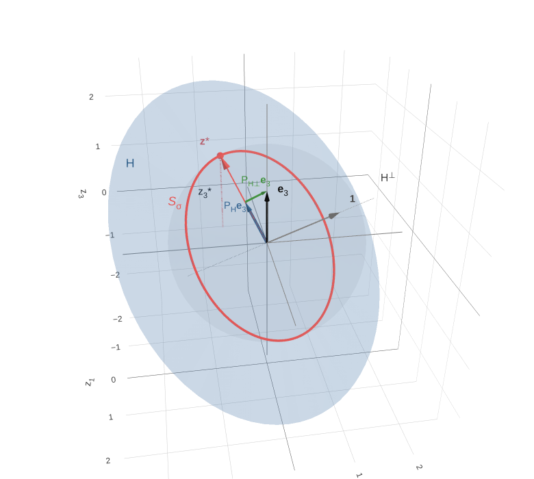
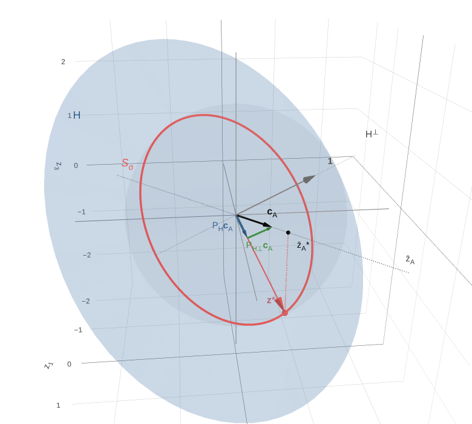

Interactive figures
Supplementary material for [paper title], [authors]
For a population of N = 3 units with fixed mean μ and variance σ2, the deviations z = y − μ1 lie on the circle Sσ, the intersection of the mean-zero plane H with the sphere of radius √N σ. Each figure shows how the largest value of a linear function of z is found by projecting onto H.

Single unit
Largest deviation of one unit: e3 = PHe3 + PH⊥e3, and z3* = σ√(N−1).

Mean of a subset
Largest mean of a subset A = {1, 2}: cA = M−11A, and z̄A* = σ√((N−M)/M).
Drag to rotate, scroll to zoom, and hover on z* for its coordinates
and the maximum value; the home button in the toolbar restores the starting view.
The figures were produced in R with plotly; the scripts are
R/hyperplane_sphere_N3_plotly.R and
R/subset_mean_difference_N3_plotly.R.